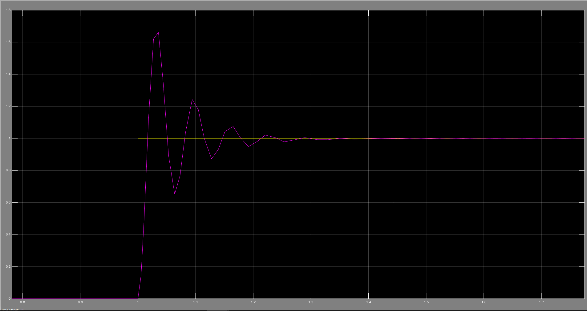

Self-Balancing Two-Wheeled Robot
Arduino-based mechatronics project with real-time PID control
Project Objective
This project aims to design and construct a self-balancing two-wheeled robot capable of maintaining upright stability using a closed-loop control system. It provides a hands-on exploration of control theory, PID tuning, sensor fusion, and real-time embedded implementation using Arduino and Matlab/Simulink.
Key Components
- Microcontroller: Arduino Uno (ATmega328P)
- Sensor: MPU6050 6-axis Gyro + Accelerometer (I2C)
- Motors: 2x DC motors with metal gearboxes
- Motor Driver: L298N H-Bridge
- Control Algorithm: PID implemented in C
- Simulation: Matlab Simulink model for dynamic behavior analysis
System Overview
.png)
- MPU6050 captures the robot’s pitch angle using sensor fusion (Kalman/Complementary Filter).
- Arduino runs the PID algorithm to adjust motor power based on the angle error.
- L298N driver amplifies PWM signals to control the motors.
- Real-world behavior is validated against Simulink simulation models.
Photos
- Simulation in Simulink: 
- Settling Time is relatively fast: The system reaches steady state (within a certain tolerance, for example 2% or 5% of the set value) in about 0.2 to 0.25 seconds. This is a fairly fast settling time, indicating that the controller responds effectively to the input change..
- Oscillations: After overshooting, the response has decreasing oscillations around the steady state value (yellow line).
- Fast response: The system responds quite quickly to the step signal. Immediately after the input change, the output quickly increases and approaches the set value.
- Final Robot:
Result & Performance
- The robot maintains vertical stability in static and dynamic environments.
- PID parameters tuned both via trial-error and Simulink simulations.
- Demonstrates real-time embedded control with low-cost components.
- Educational value in understanding multivariable control systems.
Demo Video
Source Code
The Arduino sketch for MPU6050 data acquisition, angle estimation, and PID control is available on GitHub.
👉 GitHub Repository